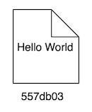
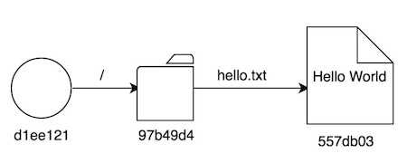
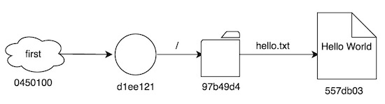

Qué es Git. Estructura básica
Git es una herramienta de control de versiones distribuida, pero en última instancia no es más que un gestor de contenido, y en este post entenderéis por qué.
El núcleo de Git no es ni más ni menos que un mapa clave-valor de toda la vida, donde las claves son valores hash generados mediante el algoritmo SHA1, y los valores pueden ser varias cosas. En este post nos centraremos en los diferentes tipos de valor que Git puede almacenar.
Supongo que os será familiar, pero una clave hash SHA1 es algo así:
cf23df2207d99a74fbe169e3eba035e633b65d94
Es decir, una serie de 40 caracteres, que Git generará a partir del
contenido que almacenemos en el valor correspondiente. Esto significa
que, a mismo valor, misma clave hash generada. Para hacer la prueba sólo
tenéis que utilizar uno de los conocidos como “plumbing commands” en
Git, hash-object, de la siguiente
forma:
echo Hello World | git hash-object --stdin
Comando que generará el valor
557db03de997c86a4a028e1ebd3a1ceb225be238, desde cualquier máquina, y por supuesto, de forma idempotente.
El comando hash-object puede
invocarse sin necesidad de estar en un repositorio de Git y funcionará
sin problemas. Para seguir clarificando conceptos, sin embargo, vamos a
crear un repositorio de Git, para trabajar desde allí (lo que
conseguimos con git init en
cualquier carpeta, preferentemente vacía).
Más o menos todos sabemos que inicializar un directorio como repositorio
de Git crea una carpeta .git con
varias cosas, aquí tenemos una captura de una versión recién creada:
.git
├── HEAD
├── branches
├── config
├── description
├── hooks
│ ├── applypatch-msg.sample
│ ├── commit-msg.sample
│ ├── post-update.sample
│ ├── pre-applypatch.sample
│ ├── pre-commit.sample
│ ├── pre-push.sample
│ ├── pre-rebase.sample
│ ├── pre-receive.sample
│ ├── prepare-commit-msg.sample
│ └── update.sample
├── info
│ └── exclude
├── objects
│ ├── info
│ └── pack
└── refs
├── heads
└── tags
Muchas de ellas las iremos desgranando en esta serie. La subcarpeta más
importante, y la que contiene el mapa clave-valor que he mencionado más
arriba, es objects. Vemos que, de
momento, objects está vacía, tan
solo tiene dos sucarpetas, info y
pack, también vacías, y que vamos
a ignorar por ahora.
Guardando objetos
Vamos a utilizar de nuevo
hash-object para almacenar una
entrada con el valor “Hello World” en
objects. Esto lo podemos
conseguir de la siguiente manera:
$ echo Hello World | git hash-object --stdin -w
557db03de997c86a4a028e1ebd3a1ceb225be238
Aunque la salida del comando es la misma que conseguimos al lanzarlo sin
la opción -w, ha ocurrido algo
interesante. Analicemos de nuevo el contenido de
objects:
├── objects
│ ├── 55
│ │ └── 7db03de997c86a4a028e1ebd3a1ceb225be238
│ ├── info
│ └── pack
Vemos que ahora tenemos una carpeta,
55, con un fichero,
7db03de997c86a4a028e1ebd3a1ceb225be238. Es decir, Git ha tomado los dos primeros caracteres de la clave hash
generada a partir del valor “Hello World”, ha creado una carpeta, y con
el resto de la clave ha creado un fichero. El contenido de este fichero
no se puede inspeccionar con un editor de texto, pero sí existe un
comando de Git que nos permite visualizar su contenido fácilmente,
cat-file:
$ git cat-file -p 557db03de997c86a4a028e1ebd3a1ceb225be238
Hello World
$ git cat-file -p 557db03
Hello World
He repetido el comando dos veces, la segunda de manera simplificada,
para demostrar que, si nuestro repositorio Git no tiene dos claves que
empiecen por 557db03 es posible
trabajar con las claves simplificadas igualmente. Podemos bajar hasta a
cuatro caracteres si queremos, pero lo normal es simplificar a 6 o 7,
cifra que prácticamente elimina la posibilidad de tener duplicados en un
mismo repositorio.
El comando cat-file también
permite interrogar por el tipo del valor, veamos qué obtenemos:
$ git cat-file -t 557db03
blobEn efecto, el tipo de nuestro valor es blob, que viene a ser un array de bytes sin más, y es el tipo que se utiliza para almacenar los ficheros que todos subimos a nuestro control de versiones, sean binarios o código fuente. Es uno de los cuatro tipos que Git puede almacenar en su repositorio. Sí, habéis leído bien, Git sólo maneja cuatro tipos de datos.
Vamos a ir dibujando un diagrama de nuestro repositorio sobre la marcha. De momento, lo que tenemos es:

Primer commit
Aunque hemos utilizado un “plumbing command” para guardar algo en el repositorio, esta no es para nada la forma habitual de utilizar Git. En el 100% de los casos, crearemos un fichero con algún contenido, así que vamos a ello:
$ echo Hello World > hello.txt
$ git add .
$ git commit -m "First commit"
[master (root-commit) d1ee121] First commit
1 file changed, 1 insertion(+)
create mode 100644 hello.txt
Como ya he comentado anteriormente, se presupone cierto conocimiento de
la herramienta, por lo que no entraré en detalles de lo que estoy
haciendo en cada paso. Tan sólo añadir que, nuestra carpeta
objects ha permanecido inmutable
hasta el último commando, es decir, hasta el momento en que hemos hecho
commit, donde ha quedado así:
├── objects
│ ├── 55
│ │ └── 7db03de997c86a4a028e1ebd3a1ceb225be238
│ ├── 97
│ │ └── b49d4c943e3715fe30f141cc6f27a8548cee0e
│ ├── d1
│ │ └── ee121d5fe96b891ac0cc695498f31c0a4a7664
│ ├── info
│ └── packEs decir, se han añadido cuatro entradas nuevas al mapa clave-valor. Vamos a inspeccionar cada una de ellas.
-
557db03sigue siendo la entrada que añadimos manualmente, es decir, el blob “Hello World” -
Vamos a utilizar el comando
git logpara conocer la clave hash que se ha asociado al commit:
$ git log -1
commit d1ee121d5fe96b891ac0cc695498f31c0a4a7664
Author: RaulAvila <xxxxxx@gmail.com>
Date: Sun Jan 22 18:50:55 2017 +0000
First commit
La clave hash simplificada del commit es
d1ee121. Veamos qué obtenemos con
cat-file, de la misma forma en
que hicimos con el blob:
$ git cat-file -t d1ee121
commit
$ git cat-file -p d1ee121
tree 97b49d4c943e3715fe30f141cc6f27a8548cee0e
author RaulAvila <xxxxxx@gmail.com> 1485111055 +0000
committer RaulAvila <xxxxxx@gmail.com> 1485111055 +0000
First commit
Es decir, el tipo del valor asociado a
d1ee121 es
commit, por lo que acabamos de descubrir el segundo
tipo de datos que puede almacenar Git. El contenido del fichero, además
de la información que muestra el comando
git log, hace referencia a un
“tree”, con un código hash, que “casualmente” también encontramos en la
carpeta objects,
97b49d4. Así que vamos a
inspeccionar este hash:
$ git cat-file -t 97b49d4
tree
$ git cat-file -p 97b49d4
100644 blob 557db03de997c86a4a028e1ebd3a1ceb225be238 hello.txt-
Acabamos de descubrir el tercer tipo de datos, tree,
que viene a ser el equivalente a una carpeta en una estructura de
ficheros de toda la vida. De hecho si mostramos el contenido del valor
de esta entrada tree, lo que tenemos es una lista de ficheros, donde
la primera columna son permisos de acceso, la segunda el tipo del
valor (que puede ser un blob u otro tree), la tercera la clave hash
que lo identifica, y la segunda el nombre del fichero. Muy parecido a
la salida de
lsen Unix, ¿verdad? Seguro que ya os habéis dado cuenta de la naturaleza recursiva de esta estructura, puesto que un tree puede contener otros trees a varios niveles, además de ficheros “normales”, o blobs. A modo de ejemplo, esta podría ser una salida perfectamente válida del comandocat-file -psobre un valor tree:
100644 blob 557db03de997c86a4a028e1ebd3a1ceb225be238 hello.txt
040000 tree f27fede2220bcd326aee3e86ddfd4ebd0fe58cb9 srcEs decir, un fichero y otra carpeta, que a su vez puede contener más ficheros.
En este punto ya hemos visto que nuestra carpeta
objects tiene tres entradas:
-
557db03, el valor “Hello World” que almacenamos de forma manual antes de crear nuestro primer fichero + commit -
d1ee121contiene toda la información de nuestro primer commit, con un tree directamente asociado al commit, a modo de root -
97b49d4es el mencionado tree, y contiene un fichero de nombre “hello.txt”, que está asociado al hash557db03
¡Un momento! ¿Habéis notado algo? El valor hash asociado al fichero
“hello.txt” es exactamente el mismo que nosotros añadimos manualmente
antes de hacer un commit. En efecto, Git ha detectado que el contenido
del fichero es el mismo que el que ya existe en esa entrada del
repositorio (más que nada porque el valor hash generado es idéntico), ¡y
la ha reutilizado! De hecho, la entrada
557db03 contiene sólo el blob
“Hello World”, sin ninguna información del nombre del fichero que lo
contiene. Esta información es propiedad del objeto tree que referencie a
dicho blob.
Si completamos el diagrama, asociando los diferentes valores, nos quedaría algo así:

Tags
Comenté anteriormente que Git puede almacenar cuatro tipos de datos, pero de momento sólo hemos visto tres. El tipo que nos queda es más difícil de introducir de manera “casual”, y es tag. Supongo que estaréis familiarizados con los tags de Git, para marcar un commit concreto que nos interesa. Vamos a hacerlo con este primer commit:
$ git tag -a first -m "First Commit"
Tras hacer esto, los cambios dentro de nuestra carpeta
.git se pueden ver aquí:
├── objects
│ ├── 04
│ │ └── 50100369ff9e0b980dfc6ae42aaeb1de6890f6
│ ├── 55
│ │ └── 7db03de997c86a4a028e1ebd3a1ceb225be238
│ ├── 97
│ │ └── b49d4c943e3715fe30f141cc6f27a8548cee0e
│ ├── d1
│ │ └── ee121d5fe96b891ac0cc695498f31c0a4a7664
│ ├── info
│ └── pack
└── refs
├── heads
│ └── master
└── tags
└── firstSon los siguientes:
-
Tenemos un nuevo valor en
objects,0450100, una inspección concat-filenos da lo siguiente:
$ git cat-file -t 0450100
tag
$ git cat-file -p 0450100
object d1ee121d5fe96b891ac0cc695498f31c0a4a7664
type commit
tag first
tagger RaulAvila <xxxxxx@gmail.com> 1485112874 +0000
First Commit
Es decir, el valor es del tipo tag, como hemos
adelantado, y apunta al objeto
d1ee121, que no es más que el
commit en el que estábamos cuando creamos el tag. Este valor también
contiene la descripción que añadimos al tag cuando lo creamos.
-
En la carpeta
.git/refs/tagstenemos un nuevo fichero,first, que podemos inspeccionar con un editor de texto o el comandocat:
$ cat .git/refs/tags/first
0450100369ff9e0b980dfc6ae42aaeb1de6890f6Está claro que este fichero no es más que un alias que contiene una referencia al hash del tag creado, ni más ni menos.
Con esto, actualicemos nuestro diagrama:
